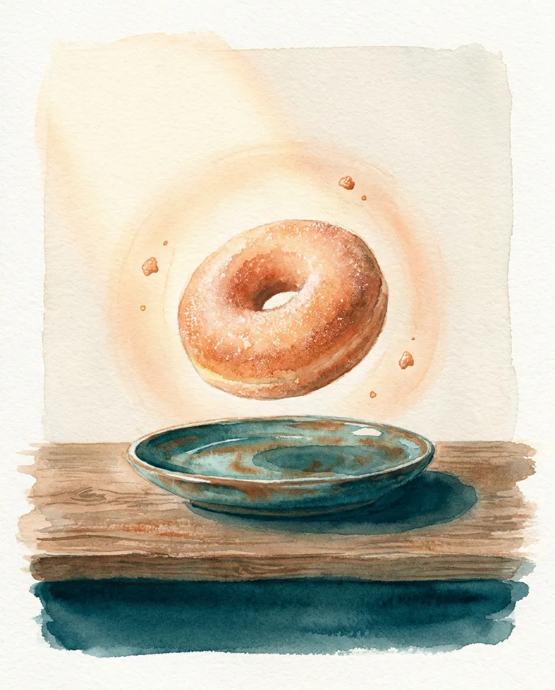
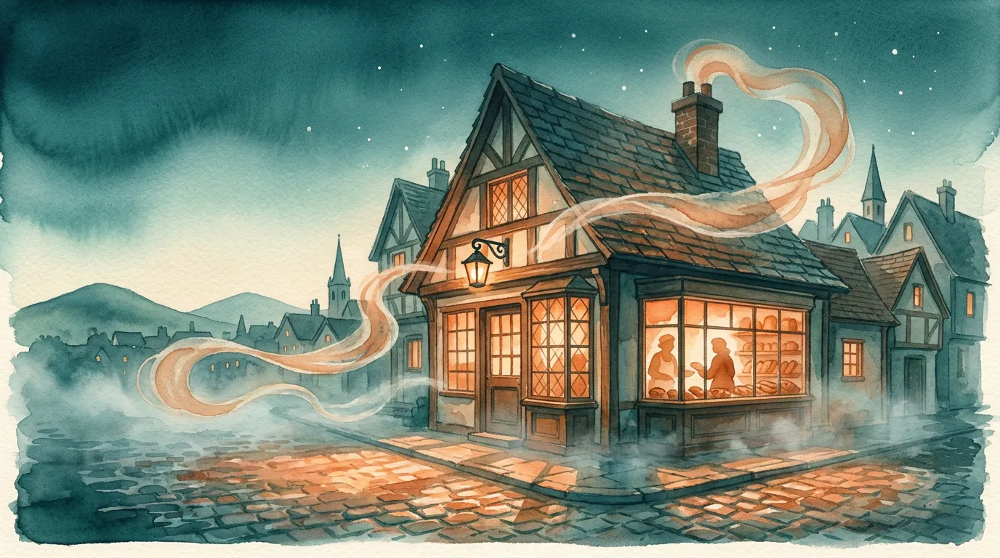
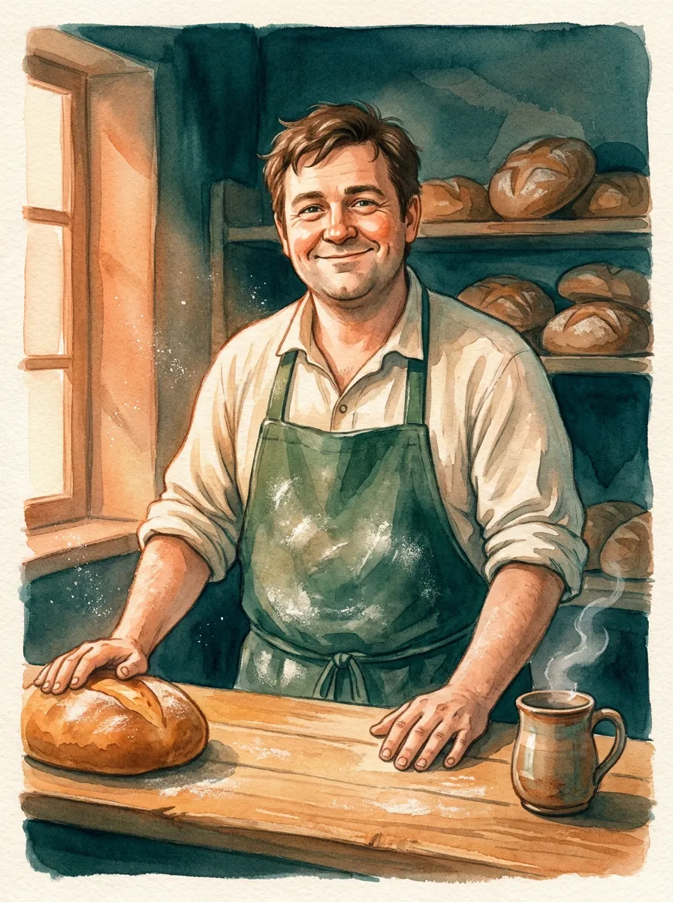
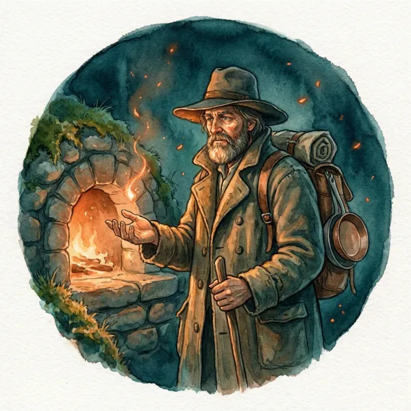
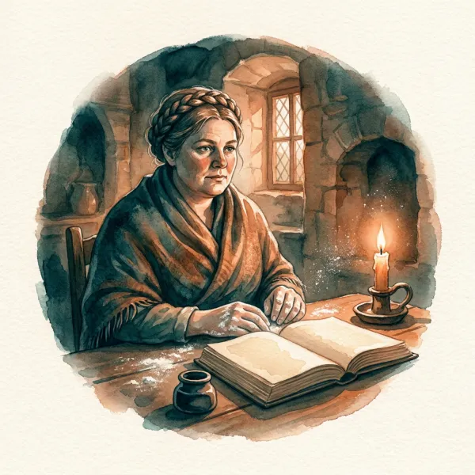
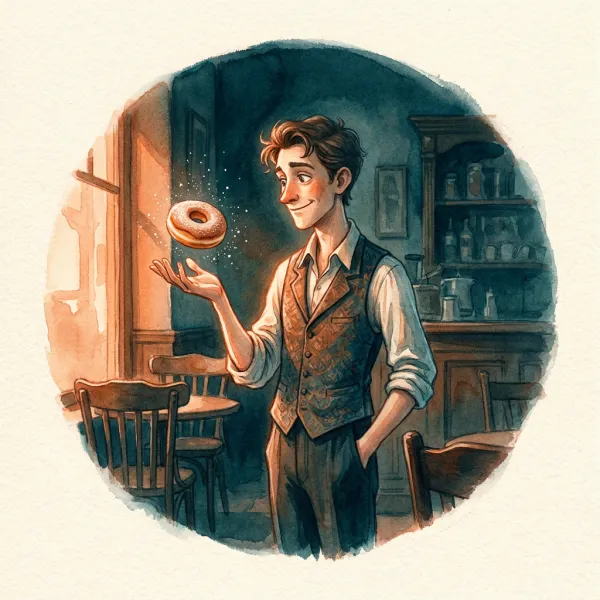
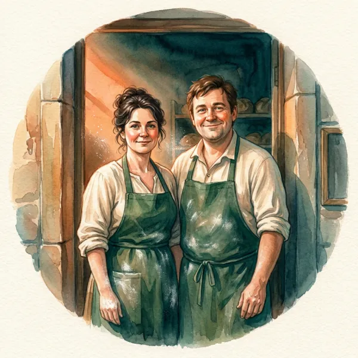
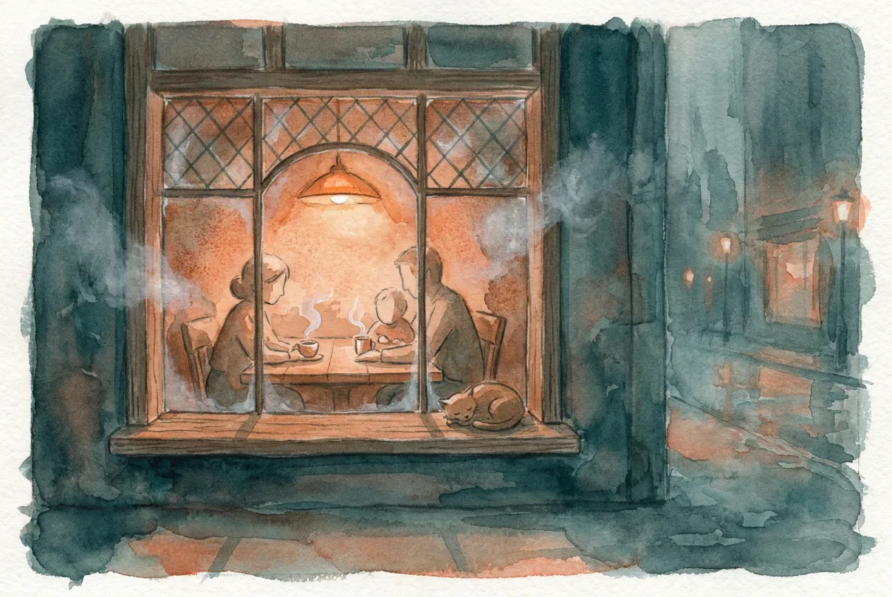

Little wonders, baked nightly.




A FAMILY BAKERY, FOUR GENERATIONS DEEP
Step out of the rush and into the warm hum of our hearth.
Visit the bakery
“Come in, come in — the bread’s still warm.”
— TOMAS FABLE, TODAY’S HOST
We are the Fable family — four generations of bakers behind one counter. The oven Elias built has never gone cold, and the door he hung has never been locked to a hungry traveler. Come in as a stranger; you will not stay one for long.






Past the shelves and the till there are worn wooden tables, steam rising from cups, and a windowsill that belongs to the cat. The rush stays outside the glass.
Stay a while →